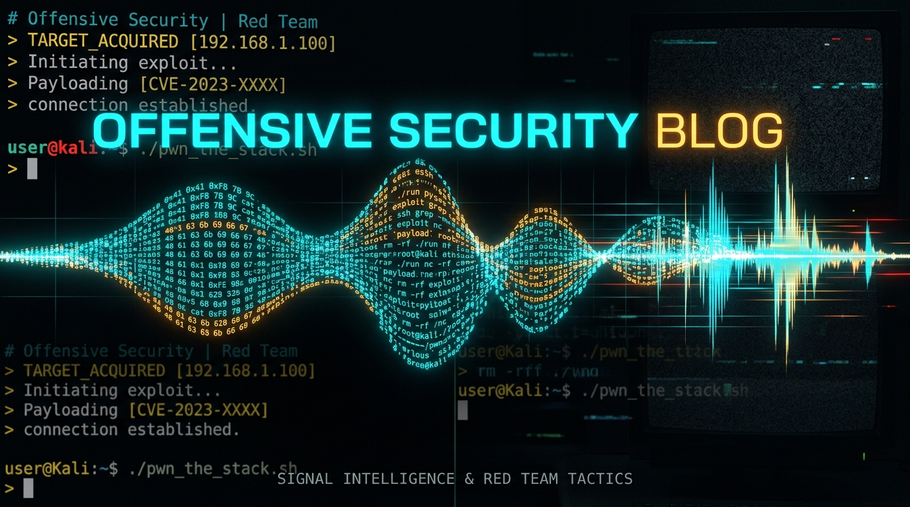

Most people assume vulnerability research is a visual game.
They picture an operator sitting in a dark room with three ultra-wide monitors. Glowing syntax highlighting. Colorful control-flow graphs sprawling across a Ghidra canvas. Code minimaps scrolling smoothly down the edge of an IDE.
That visual setup is comfortable. It is also a massive trap.
When you stare at code with your eyes, your brain takes shortcuts. You see clean indentation, balanced brackets, and neat comments, and your mind fills in the blanks. You assume the code does what the visual layout implies. Sighted engineers gloss over boilerplate checks, skim past error handling routines, and miss the silent logic flaw sitting right in front of them.
I do not look at code. I listen to it.
For more than a decade, my primary interface to computer systems, hypervisors, and reverse engineering tools has been a screen reader pushing synthesized speech at 500 to 600 words per minute. To anyone standing behind my chair, my headphones sound like an angry fax machine or an alien frequency modulation burst.
To me, it is high-fidelity telemetry.
Back in 2019, I gave a presentation at DerbyCon called Stable 21: Hacking While Blind. I walked the room through how a blind hacker actually breaks software. Later, I documented those terminal survival principles on TheBlindHacker.com.
Listening to raw code flows linearly strips away visual layout bias. When you audit code by ear at blistering speeds, vulnerabilities do not hide behind pretty themes. They announce themselves.
Here is what it actually means to hack by ear, how the terminal pipeline works, and why accessibility is not an accommodation: it is an asymmetric offensive advantage.
The "Text-First" Mindset: Why the CLI is King
For blind and visually impaired hackers, the Command-Line Interface is king.
Graphical user interfaces (GUIs) are cluttered, unpredictable, and slow for screen readers. Web dashboards hide critical backend endpoints behind fancy styling. Visual IDEs constantly recalculate layout geometry and fire off noisy accessibility events.
The CLI gives you three distinct operational advantages:
- Total Control: You decide what text to read and exactly when to read it.
- Raw Speed: Synthetic speech parses linear text much faster than human eyes can scan visual layouts.
- Scriptability: You can pipe, filter, and chain commands together to automate repetitive tasks instantly.
In offensive security, speed comes from stripping away latency between intent and execution. When your entire toolchain runs in the terminal, you never fight UI friction.
What 500 WPM Actually Sounds Like
Conversational human speech lands between 130 and 170 words per minute. If an audiobook narrator talks at 200 words per minute, listeners complain that the playback feels rushed.
At 550 words per minute, synthetic speech does not sound like speech anymore. It becomes an acoustic stream of compressed phonemes.
[Normal Speech: ~150 WPM] ==> "if (user->role != ADMIN) return -EPERM;" (Takes ~2.5s)
[Auditory Stream: 550 WPM] ==> /ɪf-ju-roʊl-nɑt-ædmɪn-rɪtɜrn-pɜrm/ (Takes ~0.4s)
To achieve that speed without distortion, modern neural or deep-learning voices are completely useless. Neural voices sound natural and smooth, but they introduce latency, syllable drag, and inflection lag. If you crank a neural voice to 400 WPM, the phonemes smear together into unintelligible mud.
Instead, blind security researchers rely on lightweight formant synthesizers: Eloquence or eSpeak NG.
These synthesizers do not stitch together recorded human audio clips. They generate synthetic vowel and consonant frequencies algorithmically using mathematical equations. Because there is no acoustic overhead, you can strip out natural pauses, eliminate breath sounds, and compress syllables down to their bare phonetic minimums.
Your brain adapts rapidly. Neuroplasticity kicks in after weeks of immersion. The auditory cortex learns to unpack these phonetic bursts asynchronously. You stop hearing individual words; instead, you process syntactic structures and execution semantics almost instantly.
A 500-line C file with ten nested functions, error handling branches, and buffer allocations takes a visual auditor ten to fifteen minutes of careful scanning. I can stream the entire abstract syntax tree through my headphones in ninety seconds.
Terminal Survival: Taming Output Verbosity
One of the biggest challenges for a blind hacker is verbosity.
Offensive tools like Nmap, LinPEAS, or FFUF can spit out thousands of lines of terminal output in seconds. If your screen reader attempts to read that raw flood all at once, you will sit listening for hours.
In my Hacking While Blind terminal guide, I established three mandatory rules to tame output verbosity:
1. Never Dump Scans Directly to the Terminal
Always redirect long scan output to a file. This lets you inspect findings line by line at your own pace without locking your speech synthesizer.
# Overwrite to a fresh file
nmap -sC -sV 10.10.10.10 > scan_results.txt
# Append to an existing audit log
echo "=== Starting Discovery ===" >> audit_log.txt
nmap 10.10.10.10 >> audit_log.txt
# Use tee to view output while logging to disk simultaneously
nmap 10.10.10.10 | tee scan_results.txt
2. Search with Grep Instead of Reading the Haystack
Do not read 1,000 lines of closed port statuses. Find the open ports immediately:
# Filter strictly for open services
cat scan_results.txt | grep "open"
# Case-insensitive keyword search
cat target_response.html | grep -i "password"
# Extract 2 lines of surrounding context around error states
grep -C 2 "error" app_service.log
3. Page Long Files with Less
Avoid running cat on large source files. Use less to navigate page by page with full keyboard control:
- Spacebar: Next page.
- b: Previous page.
- q: Quit.
- /: Search inside the file (type
/searchtermand press Enter).
Tool Documentation: Reading the Manual Accessibly (RTFM)
In Kali Linux and offensive research, knowing how to find information is more important than memorizing every flag. Here is how to navigate documentation accessibly:
- The Man Pages: Man pages use the exact same navigation keys as
less. When reading a complex tool manual likeman nmap, search immediately for/EXAMPLEto jump straight to practical usage. - Help Flags with Paging: Tool help menus can dump hundreds of lines. Pipe the output straight into
lessso your screen reader never gets overwhelmed:nmap --help | less sqlmap --help | less - Documentation Directories: Check
/usr/share/doc/for comprehensive tool READMEs and offline exploit notes.
Auditory Pattern Recognition: The Death of Layout Bias
The biggest vulnerability in software auditing is visual expectation. Developers write code to look correct.
Consider this classic vulnerability pattern in C:
if (validate_session_token(req->auth_header))
log_debug("Session authenticated for user %s", req->user_id);
grant_privileged_access(req);
To a visual reviewer scanning a thousand-line commit diff, those two lines under the if statement appear safely grouped together. The developer intended an indented block, but they omitted the curly braces {}. As a result, grant_privileged_access() executes unconditionally on every single request.
Visual reviewers miss this flaw repeatedly because indentation tricks the human visual cortex into assuming hierarchy.
A screen reader does not get tricked by visual spacing. When configured for punctuation, the synthesizer speaks the raw syntax sequentially:
"if left paren validate session token req arrow auth header right paren"
"log debug session authenticated for user percent s comma req arrow user id semi"
"grant privileged access req semi"
The absence of an open brace or indentation block announcement hits the ears like a loud cymbal crash. In an auditory pipeline, code is strictly linear. You cannot hide an unauthenticated function call or an off-by-one pointer arithmetic offset behind whitespace or clever code formatting.
Auditory auditing forces you to process every single instruction in execution order. You hear:
- Memory allocation (
malloccall). - Boundary validation.
- Unhandled error branches that fail to release the allocation.
- Premature returns that leak state.
When an error branch fails to close a file descriptor, you physically hear the gap between the return statement and the missing cleanup routine. The cadence breaks. Your ears register the anomaly before your conscious mind even pulls up the man page.
The Terminal Battle Station: Ditching GUI Bloat
Visual developers love modern IDEs. They pile on extensions, sidebars, integrated terminals, tab bars, Git history trees, and AI chat panels.
For someone working purely by ear, an IDE like VS Code or CLion is pure acoustic noise. Every time you hit a navigation key, the accessibility tree has to recalculate layout geometry, fire off DOM events, and speak irrelevant context:
"main.c, tab 3 of 8, editor has focus, line 42 column 18, breadcrumb bar, outline pane collapsed."
That noise kills throughput. That is why my entire research rig lives in the Linux terminal, powered by tmux, clean shell pipes, and headless utilities running inside isolated containers on NextGenPVE (LXC 205 and LXC 211).
flowchart LR
subgraph Engine ["Auditory TUI Engine"]
TMUX[tmux Terminal Session]
AST[tree-sitter / AST Piper]
RG[ripgrep Token Filters]
end
subgraph AudioPipeline ["Speech Dispatcher Pipeline"]
PIPE[/tmp/audio_stream.fifo]
SYNTH[eSpeak NG / Speechd]
EAR[Audio Stream 550 WPM]
end
TMUX --> AST
AST --> RG
RG --> PIPE
PIPE --> SYNTH
SYNTH --> EAR
The Acoustic tmux Workflow
In my terminal environment, tmux acts as a window manager, session persistence layer, and audio multiplexer. Every pane runs a dedicated offensive tool or telemetry monitor.
To keep auditory navigation blazing fast, I bind custom keys in .tmux.conf to stream buffer contents straight into the local speech dispatcher:
# Direct pane dump to speech dispatcher without screen reader lag
bind-key -n M-y run-shell "tmux capture-pane -p -S -50 | tr -s '\n' ' ' | head -c 2000 | espeak-ng -s 520 -p 50 &"
If I monitor a fuzzing session or compile an exploit payload, I do not sit waiting and manually refreshing the screen. I hit Alt-Y. tmux captures the last 50 lines of output, strips redundant whitespace, and sends it directly to espeak-ng at 520 words per minute. Within one second, I know if the build succeeded, where the compiler threw a warning, or which fuzz target triggered a crash.
Acoustic AST Filtering: Parsing Code Structurally
Raw text is good, but structural AST parsing is where auditing by ear becomes an overwhelming advantage.
When reviewing a massive target codebase, you do not want to listen to thousands of lines of getters, setters, and struct definitions. You want to extract control-flow paths and dangerous sinks immediately.
I use a custom Python pipeline backed by tree-sitter to parse source code into an abstract syntax tree, strip out decorative syntax, and serialize function call hierarchies directly to an acoustic stream.
Here is a simplified version of the AST token stream utility I run inside LXC 211 when auditing C targets:
#!/usr/bin/env python3
"""
stream_sinks.py: Extracts dangerous function sinks and execution contexts
from C code, outputting flattened, acoustic-friendly streams for speech synthesizers.
"""
import sys
import re
DANGEROUS_SINKS = {
"memcpy", "strcpy", "sprintf", "strcat", "gets",
"system", "popen", "execve", "malloc", "free"
}
def analyze_line(line_num, text):
cleaned = text.strip()
if not cleaned or cleaned.startswith("//") or cleaned.startswith("/*"):
return None
# Check for calls to dangerous sinks
for sink in DANGEROUS_SINKS:
pattern = rf"\b{sink}\s*\("
if re.search(pattern, cleaned):
# Format explicitly for rapid synthetic speech comprehension
return f"Line {line_num}: Sink {sink.upper()} in expression: {cleaned}"
# Detect unhandled error checks
if re.search(r"if\s*\(.*err.*\)\s*$", cleaned):
return f"Line {line_num}: WARNING: Empty or unbraced error branch: {cleaned}"
return None
def main():
if len(sys.argv) < 2:
print("Usage: stream_sinks.py <target_file.c>")
sys.exit(1)
with open(sys.argv[1], "r", encoding="utf-8", errors="ignore") as f:
for idx, line in enumerate(f, start=1):
finding = analyze_line(idx, line)
if finding:
print(finding)
if __name__ == "__main__":
main()
When you pipe a 40,000-line C codebase through this utility into your screen reader, you do not waste ten hours scrolling past documentation blocks and header guards. In four minutes, every dangerous memory copy, unbounded string manipulation, and suspicious unbraced conditional is read directly into your ears with its exact line reference.
Decompilation and Binary Reversing Without Eyes
When security practitioners find out I reverse-engineer compiled binaries, they always ask the same question:
"How do you look at the disassembly graph without a mouse?"
The short answer: I don't look at graphs. Control-flow graphs are just graphical representations of basic blocks connected by conditional jumps.
Visual reversers love Ghidra and IDA Pro because they can zoom out, see boxes connected by green and red arrows, and visually trace execution branches. But graphs get messy fast. When a binary contains heavy control-flow flattening, obfuscation, or thousands of nested loops, visual graphs turn into a tangled bowl of spaghetti. Your eyes get lost in the lines.
In contrast, tools like Radare2, Rizin, and headless Ghidra scripts allow you to inspect disassembled binaries linearly through pure CLI commands.
# Linear disassembly analysis with Radare2 inside LXC 211
r2 -q -c "aaa; afl" ./target_daemon | grep -i "auth"
Inside Radare2, you can seek to a target function and dump the control-flow blocks as a structured, hierarchical list:
[0x00401122]> pdr
; -- FUNCTION: sym.verify_auth_token
; bp-based frame, 48 bytes
0x00401122 push rbp
0x00401123 mov rbp, rsp
0x00401126 sub rsp, 0x30
0x0040112a mov qword [rbp - 0x28], rdi
0x0040112e cmp qword [rbp - 0x28], 0
0x00401133 je 0x401150 ; [1] JUMP ON NULL
0x00401135 mov rdi, qword [rbp - 0x28]
0x00401139 call sym.parse_token_header
0x0040113e test eax, eax
0x00401140 jne 0x401158 ; [2] JUMP ON FAILURE
; Flow continues...
Instead of dragging a mouse around a visual canvas, I navigate instructions using single-key shortcuts in visual-text mode or query specific basic blocks directly.
When you hear the disassembly:
cmp qword [rbp - 0x28], 0je 0x401150call sym.parse_token_header
You track CPU registers and stack frame states in your head like an abstract execution machine. You are not distracted by UI clutter, widget docking, or color saturation. You are listening directly to register state transitions.
Accessible Offensive Tooling: The Production Stack
When picking offensive tools for red team engagements, I choose utilities with clean CLI flags, structured text logging, and headless automation support:
- Nmap: Save scan data with
-oN scan.txtor-oX scan.xmlfor linear text parsing. - Metasploit Framework: Run
msfconsolein text mode and usespool session_log.txtto capture your entire terminal session to disk. - Hydra: Fast credential brute-forcing with strict CLI parameters (
hydra -l user -P rockyou.txt target.com ssh). - Sqlmap: Automates SQL injection testing with clean Yes/No prompts. Always run with
--batchto auto-accept default flags without stalling your screen reader.
Community Mentorship: Never Feel Stupid Asking Questions
A huge part of our work in the community through Dead Pixel Sec (discord.gg/deadpixelsec) and Mentor Village is helping aspiring hackers break into offensive security.
One of my core principles is: Never feel stupid asking questions.
It is always better to say "I don't know" than to stay stuck in silence. Passion for hacking comes from relentless curiosity. If you are blind or visually impaired, do not let visual tooling gatekeep you out of InfoSec. Master the terminal, embrace the text-first mindset, and build your own workflows.
Troubleshooting & Operator FAQ
Security researchers and engineers often ask about the mechanics, physical strain, and feasibility of auditory auditing. Here are the practical answers.
How do you track nested indentation without looking at the screen?
Modern screen readers provide indentation alerts via sound pitch or verbal announcements. In NVDA and Orca, you can enable tone-based indentation indication. As indentation increases from two spaces to four spaces to eight spaces, the screen reader plays a subtle, high-frequency audio tick that rises in pitch with depth.
When code unrolls and drops back to the base scope, the tone drops down. You perceive nesting depth through acoustic pitch modulation without interrupting the spoken speech stream.
Doesn't listening to punctuation and syntax drive you crazy?
If you read code with default screen reader settings, yes, it will drive you insane. A stock synthesizer will announce every quotation mark, comma, semicolon, and parenthesis:
"Left bracket quote a quote comma space quote b quote right bracket"
Experienced researchers configure custom punctuation pronunciation dictionaries. You suppress common characters like semicolons or quotes when reading high-level flows, and enable strict punctuation modes only when auditing pointer arithmetic, boundary checks, and memory offsets.
What speech synthesizers can actually hit 500 to 600 WPM without choking?
Only formant and concatenative synthesizers can sustain these speeds:
- Eloquence: The undisputed gold standard for blind programmers. Highly responsive, minimal latency, crisp consonant definition.
- eSpeak NG: Open-source, available on every Linux distribution, highly configurable, and handles speeds up to 600 WPM easily.
- IBMTTS: Highly intelligible at extreme rates with low CPU overhead.
Avoid modern neural synthesizers (Google Cloud TTS, Microsoft Edge TTS, Piper) for real-time live navigation. They sound beautiful for podcasts, but their processing lag and syllable drag make high-speed interactive coding impossible.
Can a sighted engineer learn auditory code auditing?
Yes. Many sighted software engineers and threat researchers use text-to-speech to proofread technical documentation and audit diffs.
Start small. Set your speech synthesizer to 250 words per minute while reading a pull request. As your brain adapts to parsing spoken syntax, increase the rate by 25 words per minute every few days. Within a month, you will comfortably process code at 400+ WPM while resting your eyes from monitor glare.
Accessibility as an Asymmetric Advantage
In tech, accessibility is almost always framed as a concession. Organizations view screen reader support as a box to check for HR compliance, a legal obligation, or a set of web guidelines that developers reluctantly follow.
That framing completely misses reality.
When you master non-visual tools, you strip away intermediate visual layers that slow other researchers down. You do not wait for heavy GUI applications to render. You do not get trapped by misleading indentation or clean visual themes. You pipe raw data streams straight from hypervisor terminals, headless decompilers, and AST filters into your auditory processing system at triple the speed of normal human speech.
Vulnerabilities exist in logic, state, and execution order, not in pixel layout. Once you learn to listen to the machine, the bugs make all the noise in the world.